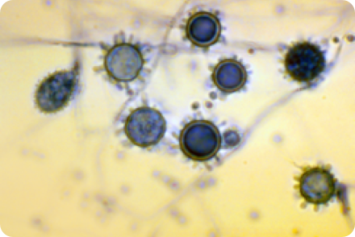

HISTOPLASMOSIS
AREA ENDEMIC FOR INFECTION:

HISTOPLASMA
Common

IDSA RECOMMENDS ITRACONAZOLE FOR HISTOPLASMOSIS1,2
IDSA guidelines describe using antifungals, including itraconazole, for treating cases of histoplasmosis.
HISTOPLASMOSIS
| IDSA GUIDELINES FOR TREATING HISTOPLASMOSIS | |
|---|---|
| Manifestation | Treatment |
| Acute pulmonary histoplasmosis | |
| Mild to moderate | 200 mg itraconazole OD or BID for 6-12 weeks for patients who continue to have symptoms for >1 month |
| Moderately severe to severe | 200 mg itraconazole BID for a total of 12 weeks following 1-2 weeks of Amphotericin B |
| Chronic cavitary pulmonary histoplasmosis | |
| Loading dose of 200 mg itraconazole TID for the first 3 days, followed by 200 mg itraconazole OD or BID for 6-12 weeks for at least 12 months | |
| Pericarditis | |
| Moderately severe to severe | 200 mg itraconazole OD or BID for 6-12 weeks if prednisone used |
| Mediastinal granuloma | |
| Symptomatic | 200 mg itraconazole OD or BID for 6-12 weeks |
| Progressive disseminated histoplasmosis | |
| Mild to moderate | 200 mg itraconazole BID for at least 12 months |
| Moderately severe to severe | 200 mg itraconazole BID for at least 12 months following 1-2 weeks of Amphotericin B |
| CNS histoplasmosis | |
| Mild to moderate | 200 mg itraconazole BID or TID for at least 12 months following 1-2 weeks of Amphotericin B |
WHEN HISTOPLASMOSIS PATIENTS WERE TREATED WITH ORAL ITRACONAZOLE3:
81%
ACHIEVED TREATMENT SUCCESS
86%
ACHIEVED TREATMENT SUCCESS WHEN TREATED AT THERAPEUTIC LEVELS FOR AT LEAST 2 MONTHS
9 MONTHS
MEDIAN DURATION TREATMENT TIME FOR PATIENTS WHO WERE CONSIDERED A SUCCESS
BLASTOMYCOSIS
AREA ENDEMIC FOR INFECTION:
BLASTOMYCOSIS
Common
IDSA RECOMMENDS ITRACONAZOLE FOR BLASTOMYCOSIS1,2
IDSA guidelines describe using antifungals, including itraconazole, for treating cases of blastomycosis.
BLASTOMYCOSIS
| IDSA GUIDELINES FOR TREATING BLASTOMYCOSIS | |
|---|---|
| Manifestation | Treatment |
| Pulmonary blastomycosis | |
| Mild to moderate | 200 mg itraconazole OD or BID for 6-12 months |
| Moderately severe to severe | 200 mg itraconazole BID for a total of 12 weeks following 1-2 weeks of Amphotericin B |
| Disseminated blastomycosis | |
| Mild to moderate | 200 mg itraconazole BID for 6-12 months |
| Moderately severe to severe | 200 mg itraconazole BID for 12 months following 1-2 weeks of Amphotericin B |
| CNS blastomycosis | |
| oral azole therapy for 1 year following 4-6 weeks of Amphotericin B | |
| Immunosuppressed patients | |
| 200 mg itraconazole BID for 12 months following 1-2 weeks of Amphotericin B | |
WHEN BLASTOMYCOSIS PATIENTS WERE TREATED WITH ITRACONAZOLE3:
90%
ACHIEVED TREATMENT SUCCESS
95%
ACHIEVED TREATMENT SUCCESS WHEN TREATED AT THERAPEUTIC LEVELS FOR AT LEAST 2 MONTHS
6.2 MONTHS
MEDIAN DURATION TREATMENT TIME FOR PATIENTS WHO WERE CONSIDERED A SUCCESS
ITRACONAZOLE REMAINS THE DRUG OF CHOICE FOR TREATING HISTOPLASMOSIS AND BLASTOMYCOSIS AFTER NEARLY THREE DECADES1,2
ASPERGILLOSIS
AREA ENDEMIC FOR INFECTION:
ASPERGILLOSIS
Common
Aspergillosis is a non-endemic, opportunistic mold infection that is common across the US4.
The causative fungi, Aspergillus, is a common mold found both indoors and outdoors. While not contained to a certain geographic area, Aspergillus continues to be a cause of life-threatening infections in patients.
IDSA AND ATS RECOMMEND ITRACONAZOLE FOR ASPERGILLOSIS1,2
IDSA and ATS guidelines describe using antifungals, including itraconazole, for treating cases of aspergillosis.
ASPERGILLOSIS
| US CLINICAL GUIDELINES FOR THE TREATMENT OF ASPERGILLOSIS SYNDROMES: |
||
|---|---|---|
| Disease Manifestation | Treatment Recommendation (ATS) | Treatment Recommendation (IDSA) |
| Chronic necrotizing (‘‘semi-invasive’’) pulmonary aspergillosis | 200 mg itraconazole TID for 3 days and then OD or BID for at least 12 months, but some prefer 18-24 months in view of the risk for relapse (Strength of Recommendation A, Quality of Evidence II) | Itraconazole alternative therapy option |
| Allergic bronchopulmonary aspergillosis | Itraconazole used as a steroid-sparing agent | Itraconazole as primary therapy |
| Invasive aspergillosis | Primary Therapy: IV voriconazole until improvement followed by oral voriconazole OR oral itraconazole until resolution or stabilization of all clinical and radiographic manifestations | Itraconazole alternative therapy option |
ITRACONAZOLE FOR THE TREATMENT OF ASPERGILLOSIS
WHEN CHRONIC ASPERGILLOSIS PATIENTS WERE TREATED WITH ORAL ITRACONAZOLE 5:
63%
global improvement in aspergilloma5
71%
improvement or stabilization of clinical and mycologic features with long term therapy in CPA7
93%
improvement in clinical and radiological features for Chronic Necrotizing Pulmonary Aspergillosis8
AFTER 6 MONTHS OF ORAL ITRACONAZOLE TREATMENT IN CCPA PATIENTS6:
77%
had improved overall response
76%
had a stable to improved clinical responses
76%
had a stable to improved radiological response
OVERALL RESPONSE IN PATIENTS AFTER 6 MONTHS OF ITRACONAZOLE TREATMENT
- Improved
- Not Improved
FUNGAL INFECTIONS POSE A SIGNIFICANT THREAT FOR SOME PATIENTS9
Many patients may be exposed to the fungi without ever presenting symptoms10, 11.
Patients may present with persistent cough, sepsis or persistent fever (despite antibiotics), pulmonary infiltrates, nodular skin lesions, and other signs12.
IMMUNOCOMPETENT AND IMMUNOCOMPROMISED PATIENTS MAY BE AT RISK9,13:
- Organ transplant
- Chemotherapy
- Hematopoietic stem cell transplant
- High-dose corticosteroids
- HIV/AIDS
- Prolonged antibiotic therapy
- Hematologic malignancies
- TPN = total parenteral nutrition (IV nutrition)
- Surgery
- ESRD = end-stage renal disease (kidney failure)
- ICU stay
- Mechanical ventilation
CHALLENGES AND LIMITATIONS WITH CONVENTIONAL ITRACONAZOLE
Sporanox® 100 mg Capsules14
-
Bioavailability55%
-
Food effect on bioavailability40% decrease when taken without food
-
Effect of PPIs on bioavailability68% decrease when taken with omeprazole17
-
Inter-Patient variability14,16High
-
Absorption variability16,18
- Vary by as much as 15-fold depending on pH of gastric environment
- Requires stomach-acid to release drug, but precipitates in higher pH of intestines
-
Patient adherence22-
Sporanox® Oral Solution
-
Bioavailability72%23
-
Food effect on bioavailability25% decrease when taken with food17
-
Effect of PPIs on bioavailability-
-
Inter-Patient variability14,16High
-
Absorption variability16,18-
-
Patient adherence22Palatability issues
TOLSURA ADDRESSES CHALLENGES AND LIMITATIONS WITH CONVENTIONAL ITRACONAZOLE
CONVENTIONAL ITRACONAZOLE
- No advanced delivery technology14,15
- Poor bioavailability14
- Affected by food14,15
- Affected by co-administration with PPI14
- Requires low pH (e.g., acidic stomach) to release and absorb drug16,17
- Precipitates in higher pH of intestines16,17
- High absorption variability16,18
- High patient variability18
TOLSURA
- Unique SUperBioAvailable® delivery technology19
- ~ 2x greater relative bioavailability20
- Maintained similar therapeutic Ctrough levels in fed and fasted states21
- Absorption not reduced by co-administration with PPI17,21
- Does not rely on an acidic stomach for dissolution due to SUBA® technology17,20
- Improved solubility in higher pH of intestines17,20
- Improved absorption due to improved solubility17,20
- Maintains therapeutic levels19